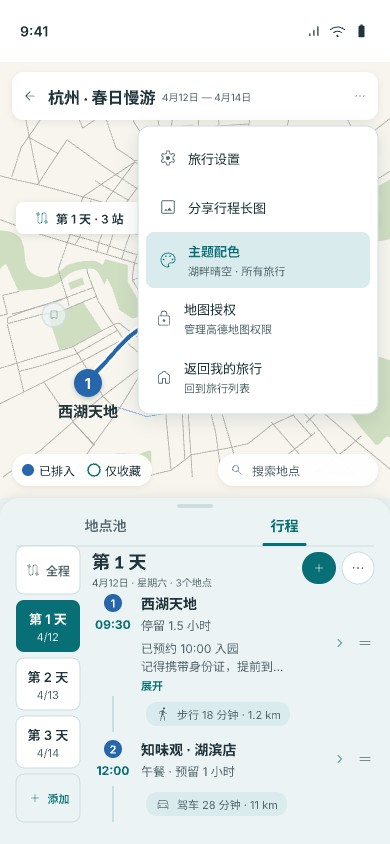
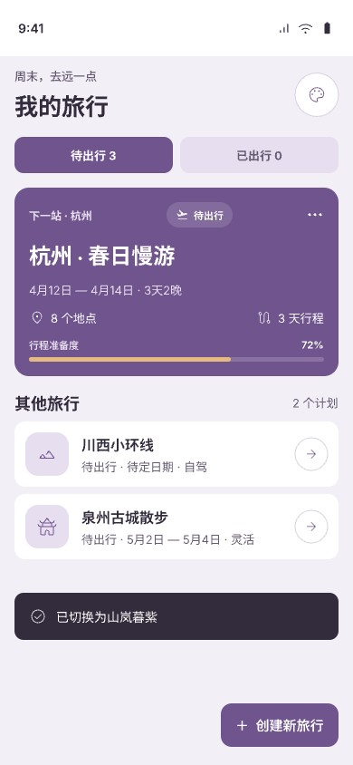
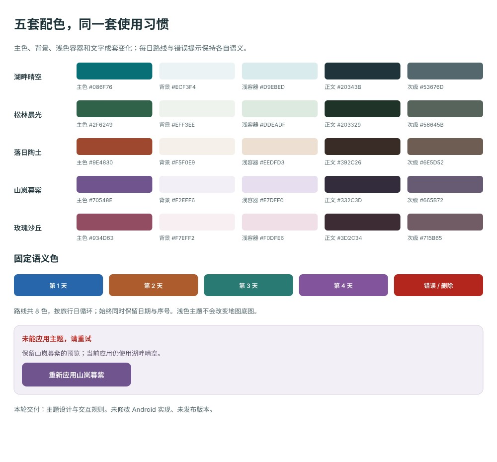
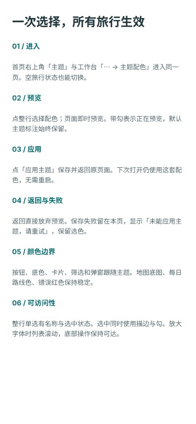

5 套浅色主题，保持熟悉的紧凑布局。点选下方配色，对照首页、主题选择页与地图工作台。
首页调色盘或工作台「⋯ → 主题配色」。所有旅行共用同一偏好。
点击整行切换本页预览。返回直接放弃；无需二次确认。
保存成功后返回原页面。下次启动沿用；失败时保留选择并提供重试。




默认保留湖畔晴空。主题改变界面配色，地图底图、每日路线色与错误红色保持稳定。此页为设计比较工具，应用内交互以设计说明为准。